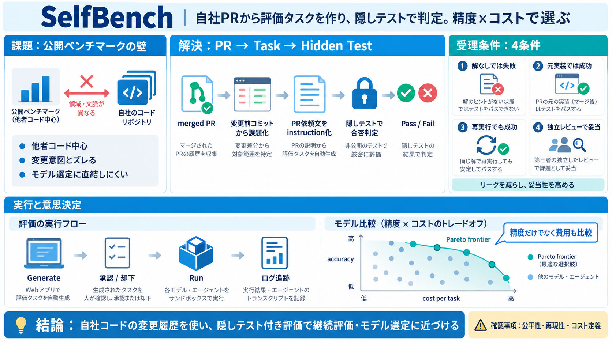

Real-world coding agent benchmark methodology - Sigmabench Leaderboard
The benchmark focuses on metrics chosen for their practical relevance in real software engineering workflows. In additio…

自社PR起点の厳密評価
マージ済みPR（変更履歴）から評価タスクを自動生成し、隠しテストで合否を厳密判定。 さらに精度（accuracy）とコスト（cost）を同時に比較します。
ベンチマークの壁
公開ベンチマークは「他者コード」向けになりがちで、あなたの開発状況（変更意図・既存実装）とズレます。 その結果、モデル選定が意思決定に直結しにくくなります。
一般化テストが“自社事情”を反映しない。
自社PRベースで、合否と費用を比較する仕組み。
PRから課題へ
PRの「変更前後」を手がかりに、変更前コミットからタスクを再構成します。 そのPRの依頼内容（instruction）を、タスクの指示文としてそのまま使います。
merged PR
変更前コミットから課題化
PR依頼文をinstruction化
隠しテストの受理条件
生成されたタスクは、隠しテストと参照解（reference solution）を前提に“成立”した場合のみ採用されます。 条件は「解なしで失敗」「元実装では通る」「再実行でも通る」「独立レビューで妥当」です。
解なしでは失敗（隠しテストで判定できること）
元の実装では成功（参照解が整合する）
再実行でも成功（ハーネスの再現性）
独立レビューで妥当（作りの恣意性を下げる）
実行の流れ
WebアプリでPR起点のバッチ生成・Dataset作成を行い、タスクを承認/却下してから実行します。 結果（精度・コスト）を比較して、リーダーボードへ反映します。
GitHubログイン→リポジトリ接続
PRで生成→承認/却下
モデル/ハーネス/サンドボックスで実行
根拠ログ
スコアだけでなく、試行ごとのトランスクリプト（実行ログ）を追跡できる設計です。 APIも用意され、監査や継続評価に接続しやすくなります。
スコア + トランスクリプト
Public Results API / Workspace API
精度×コスト
LLM評価は精度だけだと費用が増えがちです。 SelfBenchはaccuracyとcost per taskを同じ平面に置き、Pareto frontier（両立解）で比較します。
accuracy（正しく直せたか）
cost（実行にかかった費用）
なぜ“隠しテスト”が効く
ユーザーに渡る情報だけでは検証できない形でテストを作り、実際の修正と実行で初めて評価できるようにします。 これにより、指示文や公開情報から“当てる”だけの成功（リーク）を減らします。
情報不足でも、実行結果で判定
再実行・元実装成功・独立レビューで担保
Harborで評価ジョブ
成立したタスクはNativeのHarborタスクとして扱われ、実行基盤（評価用タスク基盤）で回されます。 READMEでは、Cloud Run・Temporal・KEDA・GKE（Autopilot）などの構成例が示されています。
Cloud Run（API）
Temporal workers
KEDA + Harborジョブ
良い点と注意点
強みは、自社コードを材料にし、隠しテスト・再実行・独立レビュー・ログ追跡を組み合わせている点。 一方で公平性・再現性・安全性は、実装詳細（テスト生成/レビュー/コスト定義）を追加確認する必要があります。
PR→課題化、Pareto比較、運用に寄った設計。
コスト算定・リーク回避・レビュー基準がREADMEだけでは確定できない。
コスト運用の論点
READMEでは「accuracy against cost」や、試用で価格が適用できない場合のコスト保持などが言及されています。 ただし、料金単位や失敗時の扱い等は追加ドキュメント確認が必要です。
accuracy と cost を並行評価（意思決定向け）。
入力/出力単価、最低請求、換算、失敗時の方針。
結論
SelfBenchは「自社コードの変更履歴→隠しテスト付き評価タスク」を作り、精度とコストの両方で比較できる点が核です。 公平性とコスト定義は追加確認しつつ、意思決定と継続評価（LLMOps/ MLOps）に近いベンチマークを実現します。
PR起点で評価を現実化
隠しテスト + 受理条件
Pareto frontierで選定
The benchmark focuses on metrics chosen for their practical relevance in real software engineering workflows. In additio…
This paper introduces Multi-IaC-Bench, a novel benchmark dataset for evaluating LLM-based Infrastructure as Code generat…
Using Terraform ensures that your entire Google Cloud environment - from IAM roles to Secret Manager versions - is defin…
Last updated 2026-10-01 UTC. ,,["Last updated 2026-10-01 UTC."],[],[]] [...] Recall at 1: The recall (true positive…
| Agents Codelab Evaluation | From vibe checks to data-driven Agent Evaluation Learn how to transition from informal …